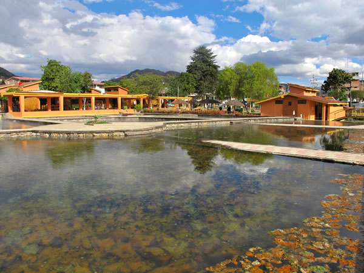

ATRACTIVOS FUERA DE LA CIUDAD
CATARATAS DE LLACANORA

Ubicado a 13 km. de la ciudad de Cajamarca. La catarata Macho mide un aproximado de 30 metros de altura con permanente caída de agua. La catarate Hembra tiene un aproximado de 15 a 20 metros de altura, conserva el paisaje natural.
LAGUNA SAN NICOLÁS

Laguna de San Nicolás es una lago peruano situado en el Cajamarca. Tiene una extensión de 2 km de largo y de ancho 1.7 km.
SANTUARIO DE POLLOC

A 34 km de Cajamarca. Polloc deslumbra por el verdor de sus campos. En ella se construyó el santuario con arquitectura italiana.
BAÑOS DEL INCA
Ubicado a6 km de Cajamarca. Son aguas termales de temperaturas superiores a 70ºC. Y histórico por los posos del Inca.
VENTANILLAS DE COMBAYO

Las Ventanillas de Combayo es un sitio arqueológico peruano situado en el distrito de La Encañada a 35 km de la ciudad de Cajamarca.
HACIENDA LA COLLPA

Ubicada a 11 km. De la ciudad de Cajamarca, dedicada a la crianza de ganado vacuno y lanar, presenta un entorno paisajista de áreas verdes.